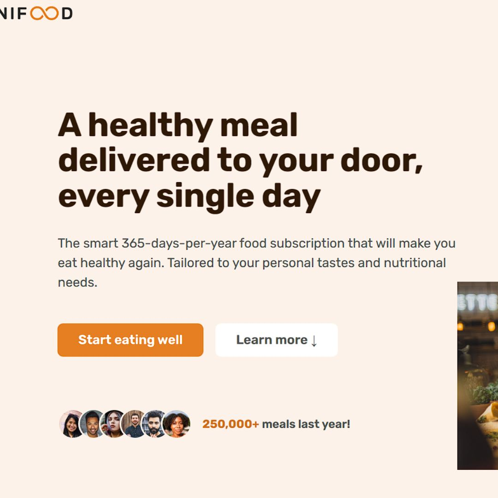

Omnifood
Site de assinatura de refeições que permite aos usuários pagar uma taxa mensal e receber refeições saudáveis e deliciosas entregues diretamente em suas casas. O site foi construído com tecnologias modernas e possui uma interface intuitiva e fácil de usar.